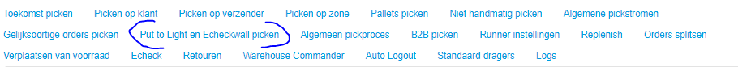

Put To Light
Een Put To Light stelling lijkt qua uiterlijk wel op een Pick To Light stelling, de lampjes en knopjes zijn hetzelfde. De werking is anders. De Put To Light wordt gebruikt om producten die door elkaar gepickt zijn in een bulk kar uit te sorteren naar (M) orders. Het proces begint door een bulk pick kar te scannen en vervolgens door blauwe kratjes aan de locaties te koppelen in de Put To Light, dat kan door de barcode van de krat te scannen en het knopje in te drukken waar de krat staat. Vervolgens kan het uitsorteren beginnen. Het uitsorteren wordt gedaan door een willekeurig product uit de bulk pick kar te pakken en dat te scannen, vervolgens gaat een lampje branden onder het juiste kratje en kan door de knop bij het lampje in te drukken de actie gereed gemeld worden. Er zijn enkele verschillende typen Put To Light stellingen mogelijk. De variatie zit hem in de vorm en in de manier waarop kratjes die gereed zijn naar de echeck gaan.
Hoe werkt een Put To Light
::: video
:::Aanvulling op Put To Light video
Als de kratten gelinkt zijn zie je in 1 rij welke orders er uit gesorteerd gaan worden, en om hoeveel producten het gaat in de bulk pick kar. Het systeem houdt bij hoeveel scans er al gedaan zijn, dus kun je als medewerker zien hoever je bent met het verwerken van de bulk pick kar.
Als de krat incompleet is kun je de krat openklikken op het scherm om te zien welk product je mist en in welke krat je het mist.
In Breda is ervoor gekozen om de kratten die incompleet zijn gelijk naar een Troubleshooter te brengen zodat de mensen aan de Put To Light door kunnen gaan met de volgende bulk pick kar.
Als het voorkomt dat je een bulk pick kar niet helemaal kan uitsorteren is er rechts een joker knop daarmee rond je de bulk pick kar af kan je de volgende beginnen
De Put To Lights laten zien hoeveel producten er nog gescand moeten worden tot dat het kratje klaar is en verwerkt kan gaan worden bij de echeck
Wanneer is een Put To Light efficiënt
Een Put To Light is efficiënt als je veel M orders hebt met niet teveel regels en items.
M orders met veel items van hetzelfde product kunnen beter via een kar met kratten gepickt worden. Omdat daarbij meerdere producten in één keer in een krat gelegd kunnen worden, terwijl deze via de Put to Light allemaal individueel gescan moeten worden.
Verschillende typen Put To Light Stellingen
In grote lijnen zijn er 2 typen Put To Light stellingen. De Put To Light stelling met doorschuifsysteem en de standaard Put To Light stelling. (en daarnaast nog een systeem dat in ontwikkeling is)
Put To Light doorschuifsysteem
De Put To Light stelling met doorschuifsysteem is o.a. in Lelystad, Watermolen 3 en Papland in gebruik. Bij dit type Put To Light stelling, staan de Echeckstations aan de achterkant van de Put To Light stelling. De Put To Light stelling is zo diep dat er 2 kratjes achter elkaar kunnen staan. Is het sorteren van producten in een kratje gereed, dan kan de Put To Light medewerker het kratje eenvoudigweg doorschuiven naar de achterkant van de Put To Light stelling en staat het kratje gereed voor de Echeck medewerker. De Put To Light met doorschuifsysteem heeft een overzichtelijke stroom van lege en volle kratjes, deze blijven in principe in het gebied van de Put To Light en de Echeckstations. Wel heeft deze Put To Light met doorschuifsysteem de eigenschap dat de Put To Light op dezelfde verdieping als de Echeckstations moet staan en zelfs vrij dichtbij de Echeckstations.
Put To Light bij Rollenbaan
De standaard Put To Light staat vaak bij een rollenbaan waarmee de volle kratjes (met uitgesorteerde M-orders) door een rollenbaan naar de Echeckstations worden gebracht. Dit type Put To Light is in gebruik in Breda en in aanbouw voor Weide 30 en Molenaarsgraaf. De Put To Light medewerker gaat in principe door met sorteren tot de hele bulk pick krat uitgesorteerd is en zet dan de volle kratjes op de rollenbaan. Vervolgens kunnen weer lege kratjes worden gepakt om in de Put To Light stelling te zetten. Deze variant heeft als voordeel dat de Put To Light niet dichtbij de Echeckstations hoeft te staan en ook niet op dezelfde verdieping. Een nadeel is hier wel dat het vervoeren van de lege kratjes wat meer organisatie vraagt. Vaak zie je dat lege kratjes op de verkeerde plek staan. Mogelijke oplossingen hiervoor zijn karratjes om lege kratten in te stapelen en het aanschaffen van flink meer blauwe kratjes dan in theorie nodig, zodat er steeds ruim voldoende blauwe kratjes beschikbaar zijn bij de Put To Light.
Voor de standaard Put To Light is inmiddels een standaard bouwblok ontwikkeld, waarmee de Put To Light ook verplaatsbaar wordt.
De standaard Put To Light is soms ook in V-vorm geplaatst als experiment om te kijken of daarmee de loopafstanden van de Put To Light medewerker minder zouden worden. Deze opstellingen zijn in Breda te zien.
Put To Light met deense karren
Daarnaast is er nog een ander type Put To Light in ontwikkeling. Dit is een frame met de Put To Light lampjes en het scherm, met daarachter karren waar de kratjes op zitten. Deze karren kunnen bijvoorbeeld Deense karren (goedkoop) zijn, met daarop kratjes die vastzitten aan de karren. De karren kunnen achter het Put To Light frame geplaatst worden. Het koppelen van de kratjes wat normaal best wat werk is, wordt nu vervangen door alleen het koppelen van de hele kar aan de Put To Light, waarna het uitsorteren kan beginnen. Als het uitsorteren gereed is, wordt de deense kar naar echeck gereden en gewisseld voor een deense kar met lege kratjes.


Instellingen
In Gomonta kan ingesteld worden wat het maximale formaat is van producten die in de Put To Light pickroute moeten worden meegenomen en hoeveel orders er maximaal in de bulk pick kar kunnen. Dit maximale aantal orders is over het algemeen gelijk aan het aantal kratjes dat in de Put To Light past. Of er kan een lager aantal orders worden gekozen, bijvoorbeeld als de bulk pick karren te vol blijken te zijn als het maximale aantal orders gekozen wordt.
https://gomonta.montapacking.nl/WMS/Shift/WarehouseSettings  Een voorbeeld van zulke Put To Light instellingen is onderstaand te zien
Picktroom
De pickstroom voor PutToLight orders op de pickscanner is te herkennen zoals in onderstaand plaatje te zien is.
Business Intelligence montaWCS
Er wordt bijgehouden hoeveel orders er gesorteerd worden met een Put To Light en hoeveel jokers deze orders bevatten. Deze informatie is in te zien via montaportal, onder het account van de vestiging waar de PutTo Light staat. Plaatje toevoegen zodra deze montaWCS beschikbaar is op montaportal
[[Doelgroep: IT
********** De informatie hieronder is meer van technische aard **********

Technische informatie bij de Put To Light
De tabellen voor Pick To Light staan gewoon in de Monta_Backend database.